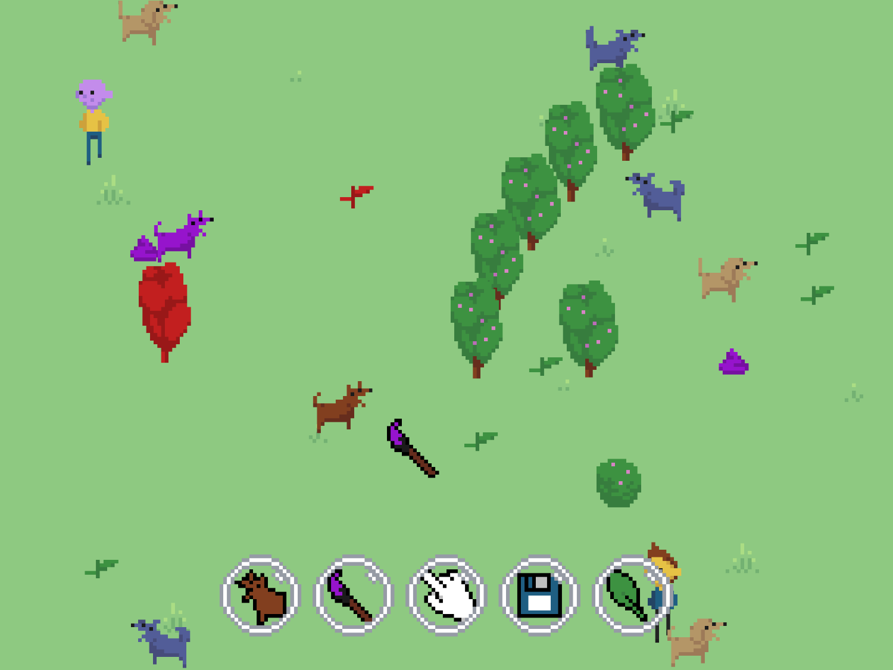

WorldCanvas
Project Reflection
-
Project Concept
WorldCanvas is a web-based drawing tool, where the canvas is an interactive world populated with entities that the user can manipulate. Defying drawing tool conventions, tools are gradually discovered through interaction with the canvas, rather than being presented in a static 'tool palette', or given to the user all at once. Every entity in the canvas is also a tool, each with its own unique functions that can manipulate the world in unexpected ways. My aim was to create something unique and surprising that would defy user expectations and create a sense of wonder and discovery.
Guiding Ideas
I made curiosity and discovery central in my interaction design decisions for WorldCanvas. While a typical drawing tool is composed of a canvas and a tool palette, WorldCanvas combines these two elements into a single, living world. Because the canvas is also the tool palette, everything inside it is mapped to a tool. I wanted to reward the user's curiosity by making sure anything that could be clicked would result in a corresponding tool. In the end, the only entity without a direct equivalent tool was the 'dog poo' entity, which I just mapped to the dog tool. I did consider what a poo tool might do, but given that the dog tool could already create poo, it didn't make sense to add one.
Another decision I made to encourage curiosity was the 'world state' system. Using hidden flags set invisibly by user actions, I made sure that new tools would be 'drip-fed' to the user as they explored the functionality of tools they already had. This created a sense of gradual discovery that would be more captivating than simply giving the user all the tools at once.
Friction was another interaction design principle I wanted to play with. Inspired by 'digital horror' media like Petscop, I originally wanted WorldCanvas to create a more oppressive atmosphere, invoking a sense of guilt in the user as they tried to exert power over a world and beings that seemed to be alive. Beings would have internal states dictating their age, and mood, and depending on the user's actions, could become depressed, grow old, or die. This would create a kind of 'moral friction' that would make the user think twice about what they're doing. Simply due to time constraints, this was an element I needed to heavily scale back.
Without things like ageing or internal emotional states, the entities in WorldCanvas weren't equipped to invoke much of an emotional response in the user, so it was unlikely any 'moral friction' would come from messing with them. Instead, I focused on the friction that came as a natural result of trying to create an artistic composition in a world that was constantly changing. The time tool, which gives the user the ability to freeze entities and the world, provided a final catharsis to this friction, allowing the user to take control of the world and create a composition free from any interference.
Mediating Expression
I aimed to design WorldCanvas as a tool for 'mediated expression', not just a standard drawing tool. This meant limiting the expressive capability of the user, but doing so in a way that encourages them to explore the tools they are given, and put them to use in interesting ways. The user is not given a blank white canvas as in a normal drawing tool, but rather a living world that they can interact with and change.
One decision I made later in development was to prevent plants from being picked up with the hand tool. While plants cannot be moved, they can instead be eaten with the dog tool and re-planted elsewhere with the nature tool. This way, tending to plants becomes a more tactile and involved process, rather than just a matter of picking them up and moving them around.
The Aesthetic
I went for a low-res pixel art look for the project. The style doesn't take its cues from any retro game console or computer in particular. It even breaks the restrictions typical of such aesthetics by having a large colour palette, and allowing pixels to overlap and intersect.
The aesthetic was initially chosen based on the needs of the project—I wanted to minimise the amount of time I spent working on art assets so that I could invest more time in the part of the project I knew would be more challenging for me: the interaction design and programming. That being said, I didn't want the project to be ugly. Ultimately, I think I found a good balance between art that would be speedy to produce, but also give the project its own visual style and personality.
Technical Considerations
The concept for WorldCanvas is very much like a video game. If not for the constraints of the project brief, it might have been smart to use a game engine like Unity or Godot to simplify development. Having no game engine to rely on forced me to think about and program functionality that I would normally just be able to leave to the engine. Konva filled many of the gaps when it came to handling sprites and animations, but I had to implement the logic for things like 'game objects' (entities), collision detection, and the internal time system myself. The final project uses 11 different .js files, each with its own purpose and scope.
| imgsAnims.js | Contains image and animation information for use by my Konva sprites. It also contains arrays of images for entities with 'variants', as well as a map for 'painted' versions of images. |
| tools.js | Contains the information and functionality for each tool. Each tool is stored as an object of class type 'Tool'. |
| entities.js | Contains classes for entities (people, animals, plants, poo, etc.) Each entity class extends either the 'Being' or 'Inanimate' class, which itself extends the overarching 'Entity' class. |
| timeManager.js | I created this script to manage the internal time system, but most of this logic ended up in worldManager.js instead. All it contains now is a declaration for the 'timeFactor' variable, which is used to speed up or slow down time. This escaped my notice until the end of development; otherwise I would have moved it to worldManager.js. |
| toolManager.js | Contains all logic for managing and adding to the user's collection of tools, as well as switching between tools. Importantly, it creates the 'tool bubble' objects that appear after collecting a new tool. |
| cursorManager.js | Contains the cursor object, which has functions for manipulating the sprite and animation currently being used for the cursor. |
| canvasManager.js | Sets up the Konva stage, as well as all the necessary layers. To achieve the pixel art look, I started with small layers of 240x180 pixels, and scaled them up based on a 'scaleFactor' variable. I also needed to make sure imageSmoothingEnabled was set to false on the stage and layers, so that the pixels would not be smoothed out when scaled up. Unfortunately, this kind of smoothing was not something I was able to solve when saving the canvas to an image file. |
| helperFunctions.js | Contains several miscellaneous functions I made for streamlining different common tasks. Probably the most important function here is the 'getParentEntity' function, which returns the entity object associated with a given Konva sprite. |
| soundManager.js | Stores sound effects, which can be played back with a simple function on the 'sound' object. Originally I had the idea of using tone.js to contextually vary the pitch and speed of sounds, but I ultimately didn't have time to explore this. |
| worldManager.js | Contains the logic that governs the user's journey through the experience. I did this using internal 'world states' that would change in response to certain invisible flags. The world state determines what kinds of entities are spawned and how often. worldManager.js also handles the flow of time, creating a day/night cycle. |
| script.js | The 'main' script. Its scope gradually became smaller as I moved functionality into other, purpose-specific scripts. Its role in the final project is only to give the user the default tools, and handle debug mode keyboard shortcuts. |
Designing a Tool Set
It was important to me that the set of tools given to the user worked as just that—a set. To this end, no tool's function would be entirely isolated from the others, and every tool would have at least one interaction with another. The dog tool, for example, removes paint from entities painted with the brush tool, and can fertilise or prune plants created with the nature tool. The time tool and hand tool can work in tandem to freeze entities, and then move them to where the user wants them.
Hand Tool
The most basic, yet also the most unique tool in the set. Originally, I wanted the user to be able to click on an entity in the canvas to get its matching tool regardless of what tool they were currently using. But this came into conflict with my desire to have each tool have a unique function on both left and right click. So the hand tool became the user's 'gateway' to all the other tools. The secondary 'grabbing' function, which allows the user to pick up entities, was originally its left-click function. But I made the decision to swap them to streamline the first action I wanted the user to do: obtaining the brush tool.
Save Tool
Originally, this tool was going to be given to the user later on in the experience. I realised later in development that giving it to the user early on would prompt them to behave creatively. It made little sense to keep it a secret, as it's no less conventional as a feature in a drawing tool than the paintbrush is. The secondary function, which allows the user to upload their own image file as a background, was added later in development, in order to give the user a whole new layer of creative control.
Brush Tool
As an extremely obvious 'drawing tool', the brush was a perfect way to introduce the user to the mechanic of tool collecting. To make it impossible to miss, I chose to have it drop out of the sky, making a 'splat' sound upon landing. The tool itself is dead-simple and universally familiar: hold left-click to paint, and press right-click to change colour. While the person tool can clear all paint from the canvas, I still would have liked a way for the user to manually erase brushstrokes—either with an additional mode on the brush tool, or otherwise with the dog tool.
Nature Tool
One of the earlier tools the user gets, and the last one to be added. This tool was born of wanting to give the user another more purely expressive tool in addition to the brush—something they would have much more control over than the dogs or people. Inspired by 'stamps' in tools like KidPix, but with an interactive twist, this tool places seedlings on the canvas, which can be grown into more advanced stages using dog poo. What turned this from its original 'foliage tool' concept into a 'nature tool' was the secondary function, which changes the climate of the entire canvas. This gives the user access to a selection of different backgrounds, as well as different varieties of plants to use (the desert climate features cacti, for example.) By right-clicking individual plants, their 'climate type' can also be changed on a per-plant basis.
Dog Tool
When I first added this tool, I hadn't decided what it would do yet—I just thought the idea of a dog tool was funny. The dog tool's functions were added one by one as I continued to work on other parts of the project—each time filling a different expressivity 'need' that came up. Its primary 'eating' function turned it into a de-facto 'eraser' that could be used to prune or clear away unwanted plants, clean up poo, and remove paint from other entities. Originally, I planned for the nature tool to make plants grow as well as planting them, but I had the more interesting idea of having the dog's secondary 'poop' function 'fertilise' the plants.
Person Tool
Probably the most mysterious—and most destructive—tool in the set. With this one, I wanted to represent the hubris of reducing something as complex as a human being to a simple tool—as well as the power a human can have to bend the world around them to their will. It gives no fine-grained control over anything, but rather alters the canvas in explosive ways. Its primary function is to 'randomise', which randomises entity variants, paint colours, and the climate of the world, as well as individual plants. Originally this function was even more destructive; as people, dogs, plants, and poop would all randomly change into each other—but I found this unsatisfying, as it just reduced the canvas contents to random slop rather than doing anything interesting with it. Right-click is a simple 'clear' function, which removes all entities and paint from the canvas.
Time Tool
The time tool is the user's ultimate weapon that they can use to finally bring everything in the canvas to heel. In my original concept, its primary function of accelerating time was much more significant, as it would cause people and animals to age and die, and eventually 'end' the world - wiping away the background and preventing any more people, animals, or plants from spawning. The secondary function, freezing time, ended up being much more useful and relevant in the final project. With it, the user can freeze individual entities, as well as the entire world, greatly enhancing their ability to create compositions without anything getting in the way. In retrospect, the tool's primary and secondary functions could have been swapped to better reflect their importance.
Next Steps
My biggest regret with the project is not being able to solve the problem of blurriness when saving the canvas to an image file. I wanted to allow the user to save their creations as clean, pixel art images, but the canvas-to-image conversion process does not seem to respect the 'imageSmoothingEnabled' property, even when set to false on the Konva stage and layers. This limits WorldCanvas' potential as an expressive tool, as it is unlikely the user will be happy with the exported result. Solving this problem will be my first priority if I continue the project.
One thing that would be interesting to explore is making the project more flexible and 'modular'. For example, right now the canvas that the project runs inside is limited to a fixed size of 240x180 pixels. A different version of WorldCanvas could adapt to any space it's given to run in. Scaled-back versions of the project could be a fun accent for a webpage. Furthermore, support for touch devices could be added, although this would require some exploration to find the best way to implement the secondary tool functions.